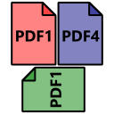
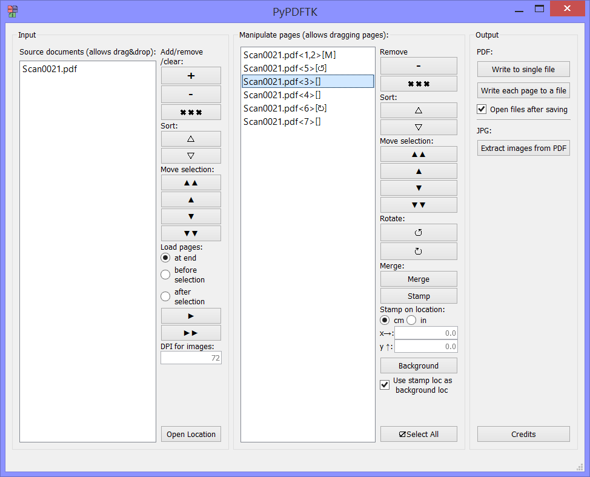

The Python PDF ToolKit

I have just released a new project: PyPDFTK.
It aims to be a practical utility to do what PDFTK does and more, trying to enhance my document workflow. Despite similar naming, this project is not associated or affiliated nor endorsed by PDFTK.
It should be specially useful when scanning documents. After all, who has never got the ADF stuck, or even originals with scrambled page order?
The program is open source and licensed under the terms of the MIT License, which is very liberal. You can use it for commercial purposes (after all, I also want to use it at work). It's made in Python, which allowed me to get a usable release within just a single week. I've compiled it with PyInstaller to make usage on Windows easier (the file was compiled to Win64).
Features
- Opening of both PDF documents and images (BMP, JPG, GIF, J2P and JPX (JPEG2000), PNG, TIFF)
- Allows dropping of files on input
- Sorting and rearranging of files before page loading
- Insertion of pages at arbitrary locations (selection-based)
- Drag&drop rearrangement of individual or selection of pages
- Individual page rotation
- Page merging (superpose one page with another)
- Page stamping (superpose one or more pages with another document or image)
- Page background (place another document or image in the background), great for watermarking!
- Three different output types:
- All pages in a single PDF document
- Each page in an individual PDF
- Extract images from pages
Screenshot
This wouldn't be a page project without a screenshot: 